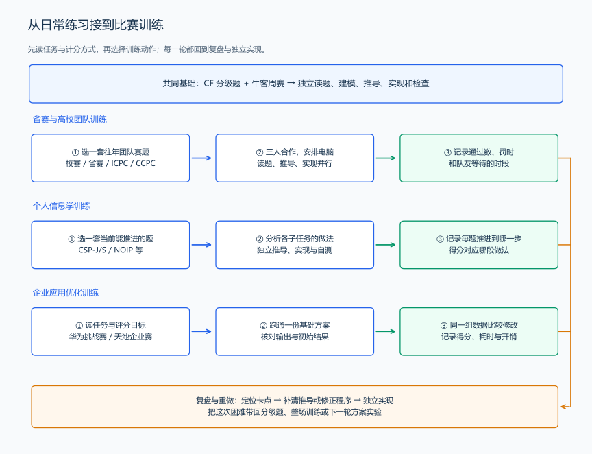

国内 ACM 与 OI 类竞赛
周赛和分级练习积累起来后，可以给自己选一个比赛目标：在校赛中独立完成几题，与队友合做一场题，或用一套信息学试题练习完整推导和自测。国内常见的程序设计比赛，有高校团队赛，也有面向青少年的信息学竞赛；它们使用的算法有很多相通之处，作答和计分方式则会影响比赛中的时间安排。
高校团队赛：ICPC 与 CCPC
在高校里，大家常说的“打 ACM”，通常指参加 ICPC、CCPC 以及采用相近赛制的校赛、省赛和邀请赛。ICPC 是国际大学生程序设计竞赛，CCPC 是中国大学生程序设计竞赛。国内高校既参加 ICPC 的国内赛站，也参加 CCPC 的网络赛、分站赛和总决赛。
| 比赛 | 可以了解的内容 | 官方入口 |
|---|---|---|
| ICPC 国内赛站 | 高校组队参加的区域赛，以及国内举办的相关邀请赛；通过赛站页面查看比赛介绍、题目和榜单 | ICPC 官网；区域赛与赛站 |
| CCPC | 国内高校的团队程序设计竞赛，包含网络选拔、分站赛和总决赛，也有省赛、地区赛与邀请赛 | CCPC 简介；赛事公告 |
| 校赛 | 从自己学校的比赛开始，练习定时作答、组队和现场配合 | 查看学校竞赛队、计算机学院与教务处的通知 |
| 各省大学生程序设计竞赛 | 与省内高校队伍一起定时解题，检验基础实现、综合建模和团队配合；下一节给出各地赛事与备赛方法 | 从本省竞赛组织与承办学校的赛事页面进入，也可在 CCPC 赛事页查找相关活动 |
经典的 ICPC、CCPC 现场赛由 3 名队员共用一台计算机，在 5 小时内合作解题。有人读新题、有人在纸上推导、有人写代码，机器成为需要共同安排的资源。提交后会收到评测结果，队伍根据通过情况和当前进展调整做题顺序。ICPC 比赛规则、CCPC 现场赛规则示例中可以看到这些安排。
例如三人同时发现一道容易题，全部围着电脑讨论，另外两道题就没有推进。可以由一人实现容易题，第二人检查样例和构造反例，第三人读下一题；提交后再交换角色。分工围绕当前任务变化，每个人都要能向队友讲清模型、复杂度和还没证明的步骤。
开始准备时，可以先参加校赛，了解本校竞赛队的训练与选拔安排；找到队友后，选一场往年的团队赛共同作答。赛后记录读题、推导、写代码和调试各用了多久，以及电脑空闲或多人等待的时段。下一轮训练就能同时改进解题能力和配合方式。
各省大学生程序设计竞赛
学会基础算法、开始做定时训练后，可以把本省大学生程序设计竞赛作为一个近期目标。省赛把省内高校的队伍聚在一起，适合检验基础题能否稳定通过、综合题能否独立建模，以及三人合作时怎样分配读题、推导和电脑使用。平时参加校赛、加入学校竞赛队，再准备省赛，练习就有了具体的时间安排。
省级赛事会使用“大学生程序设计竞赛”“大学生程序设计大赛”“ICPC 某省赛”“CCPC 某省赛”等名称。可以从下面这些实际赛事了解它们的组织方式，并找到自己所在地区的入口：
| 地区 | 省级赛事举例 | 官方或组织学校的入口 |
|---|---|---|
| 浙江 | 浙江省大学生程序设计竞赛 | 竞赛报名平台；2026 年承办学校的赛事介绍 |
| 江苏 | 江苏省大学生程序设计大赛 | 江苏省计算机学会的赛事介绍 |
| 山东 | 山东省大学生程序设计竞赛 | 山东大学软件学院的赛事介绍 |
| 广东 | 广东省大学生程序设计竞赛（GDCPC） | 承办学校的赛事介绍；校赛衔接省赛的选拔通知 |
| 河南 | ICPC 河南省大学生程序设计竞赛、CCPC 河南省大学生程序设计竞赛 | ICPC 省赛承办学校的介绍；CCPC 省赛的高校参赛记录 |
| 四川 | 四川省大学生程序设计大赛 | 承办学校的赛事介绍；校内选拔与备赛通知 |
| 湖南 | 湖南省大学生计算机程序设计竞赛的 ACM 程序设计类别 | 高校选拔与训练安排 |
| 陕西 | ICPC 陕西省大学生程序设计竞赛 | 承办学校的赛事介绍 |
| 北京 | 北京市大学生程序设计竞赛 | 承办学校的赛事介绍 |
阅读赛事名称时，可以结合一个具体例子理解：河南在 2026 年分别举办了 ICPC 省赛和 CCPC 省赛，两场比赛各自有承办学校、赛题和榜单。想参加其中一场，就到相应赛事页面了解活动，再通过本校竞赛队安排报名和训练。
各省的参赛消息通常可以沿三处查找：本校教务处或竞赛队 → 本省计算机学会、大学生科技竞赛组织 → 承办学校的赛事页面。搜索时写“省名 + 大学生程序设计竞赛 + 年份”，再核对页面中的主办、承办单位与赛事名称；找到本省往年题后，可在牛客、HDU 等平台检索赛事全名，安排重现赛和补题。
备战省赛可以分成三步：
- 先完成一场往年题。 由队友一起定时作答，记录每题由谁读、谁推导、谁实现，以及第一次通过的时刻。
- 按卡点补题。 基础题写错，就回到输入输出、类型与模拟；综合题想不出，就整理题意、直接做法和重复计算；已有算法却没通过，就缩小 WA 输入，找第一处状态差异。
- 再做一场检验。 观察同类失误是否减少，机器等待是否缩短，以及是否能独立解释更多题的模型。随后把省赛中的薄弱专题带到 ICPC、CCPC 网络赛与分站赛训练中。
这里的省赛是高校程序设计比赛。后面信息学活动中的省选，则是选拔参加 NOI 的省代表队；两者各自接到高校团队训练与青少年信息学训练中。
青少年信息学：CSP-J/S、NOIP 与 NOI
OI 是 Olympiad in Informatics，即信息学奥林匹克。国内的 NOI 系列活动由中国计算机学会（CCF）组织。学习中会经常见到 CSP-J/S、NOIP、省选和 NOI 这些名称，先把它们各自对应的活动认清，再选择适合当前学习阶段的题目。
| 活动 | 名称与主要形式 | 适合接入的练习 |
|---|---|---|
| CSP-J | CCF 非专业级软件能力认证的入门组（Junior）；第一轮侧重基础知识、读程序与推理，第二轮上机编程 | 配合语言基础、模拟、枚举和基础算法，练习读程序、手算状态与完整实现 |
| CSP-S | 同一认证的提高组（Senior），算法设计与编程任务进一步深入 | 在基础题能独立完成后，练搜索、数据结构、DP、图论与多步骤建模 |
| NOIP | 全国青少年信息学奥林匹克联赛，由各省组织的全国性个人程序设计竞赛 | 用往年整套题练习读完题面、分析不同规模、比较做法与分配时间 |
| 省级选拔活动 | 各省选拔参加 NOI 的代表队；相关方案与活动通知在各省栏目发布 | 继续补进阶专题，通过整套题检查多个方法的组合与实现能力 |
| NOI | 全国青少年信息学奥林匹克竞赛，各省派代表队参加，考查更深入的算法设计与程序实现 | 阅读较复杂的模型与证明，练习把长推导拆成可检验的步骤 |
其中，CSP-J/S 是算法与编程能力认证，两个组分别称为入门组、提高组，认证结果使用一级、二级、三级能力等级。可以通过 CCF 的认证说明与等级名称公告了解它的形式和结果名称。
NOIP、NOI 与省级选拔活动的介绍、报名消息和历年资料集中在 NOI 官网；系列活动简介说明各活动的关系，各省新闻提供本省的具体安排。准备参加活动时，可以和学校的信息学指导教师一起查看报名通知、训练计划与比赛环境，把日常练习接到实际活动上。
学习上可以先用 CSP-J 往年题检验基础，再用 CSP-S、NOIP 的题目补足建模和算法；已经能完成较长推导后，继续尝试省选与 NOI 题。每个阶段都结合自己的独立解题情况选题，遇到还没学过的专题，就回到前面的后续学习路线补相应知识。
ACM 式与 OI 式计分带来的训练重点
同样一道题，比赛评价答案的方式不同，选手就会采取不同的时间安排。
ACM 式计分先比较通过题数，再比较总罚时。 一道题得到 AC 才增加通过数；该题的罚时由通过时刻与此前计罚的失败提交组成，各已通过题的罚时再相加。下面用每次计罚失败提交加 20 分钟的 ACM 式规则，计算一份自拟记录：
| 队伍 | 已通过题数 | 已通过题的记录 | 总罚时 |
|---|---|---|---|
| 甲队 | 2 | A 在第 30 分钟通过，之前有 1 次 WA；B 在第 80 分钟一次通过 | \((30+20)+80=130\) 分钟 |
| 乙队 | 2 | A 在第 40 分钟通过；B 在第 85 分钟通过，两题都一次通过 | \(40+85=125\) 分钟 |
| 丙队 | 3 | 三题分别在第 60、120、180 分钟一次通过 | \(60+120+180=360\) 分钟 |
丙队通过 3 题，排在两支只通过 2 题的队伍之前。甲、乙通过数相同，再比较罚时，乙排在甲之前。甲队即使在另一题上提交过失败程序，这题尚未通过时也不加入上述总罚时。这种计分方式可以在 ICPC 官方赛区的说明中看到。
由这个例子可以得到训练重点：优先推进有把握完整通过的题；提交前检查推导、实现和样例；当前题卡住时，把已知结论交给队友，再判断继续推导还是切换题目。平时既要练独立解题，也要练习把思路讲给队友听。
OI 式题目常把分数分配给测试点或子任务。 题面可能给小规模数据、特殊结构与完整规模分别安排分数，选手需要分析每部分可以使用什么做法。NOIP 的官方题目分析展示了从朴素算法到优化算法对应不同得分的情况。
例如一份自拟评分安排：第一组数据给 30 分，枚举即可完成；第二组给 30 分，需要复用前缀信息；第三组给 40 分，还要进一步优化查询。程序只完成第一组得到 30 分，完成前两组得到 60 分，三组全部完成得到 100 分。另一题尚未推导完整时，已经验证的做法也有对应的得分；把它实现并保存后，可以继续研究更大规模的计算。
这就接回了前面的“一题多建模”：先提出直接做法，代入规模计算工作量，再分析怎样减少重复计算。定时训练时，写清每个做法解决了哪部分数据、还缺哪一步推导；比赛后继续把已完成的部分推进到完整解法。分析子任务时仍要检验算法是否正确，不能只凭样例通过就判断能得分。
蓝桥杯与天梯赛等相关比赛
除了上述两条训练方向，也可以用其他国内程序设计比赛安排练习：
| 比赛 | 比赛中的主要任务 | 可以重点练习的能力 | 官方入口 |
|---|---|---|---|
| 蓝桥杯软件赛 C/C++ 程序设计 | 个人完成程序设计题，软件赛设有省赛等赛事安排 | 基础实现、模拟、枚举、搜索、数学与综合建模，练习一场题中的时间分配 | 蓝桥杯个人赛介绍 |
| 团体程序设计天梯赛 | 题目分基础、进阶、登顶三个梯级；队员独立作答，再形成团队成绩 | 从基础输入输出和模拟逐步进入数据结构与算法，练习稳定实现和整场安排 | 天梯赛官网与比赛规则 |
例如想检查 C++ 基础是否熟练，可以先定时做一组天梯赛基础题，记录失误出在输入、类型、循环还是题意转换；想练个人整场安排，可以用蓝桥杯往年题作答，再按“读题—建模—实现—检查”复盘每道题。
企业组织的算法与编程赛事
还可以把企业组织的赛事作为练习目标。有的比赛要求在规定时间内完成多道算法题，有的比赛围绕一个业务任务，让参赛者持续改进方案。选择时先读“要交什么、怎样评测、分数怎样计算”，再判断应当练定时解题，还是练一个方案从实现到优化的完整过程。
| 赛事或平台 | 企业与主要任务 | 可以接入的训练 | 赛事入口 |
|---|---|---|---|
| 百度之星程序设计大赛 | 百度举办的个人程序设计比赛，通过在线评测比较解题数量与用时 | 接在牛客周赛和 CF 分级练习之后，练个人读题、建模、完整实现与整场安排 | 百度之星官网；2026 年高校参赛通知 |
| 华为软件精英挑战赛 | 华为举办的软件编程赛事，围绕实际业务场景设计、实现和优化算法方案 | 把题目拆成数据表示、合法方案、评分目标与改进步骤，练团队实现、实验比较与性能优化 | 华为大赛入口；2026 年官方赛事介绍 |
| 阿里云天池上的企业赛事 | 阿里云及合作企业举办或共同发起的赛事，平台设数据算法、工程开发等类别 | 从赛题的输入、提交结果与评价指标出发，练数据处理、可复现的实现和多轮改进；向数据算法方向学习时继续补统计与机器学习 | 天池赛事列表 |
限时算法题可以沿用本笔记的解题流程。例如准备百度之星，就先用当前 rating 附近的 CF 题补基础，再独立完成一场往年题；复盘时区分题意没读清、模型没选对、推导没完成与代码写错，下一轮练习围绕具体问题安排。
业务优化题则需要给“改进”留下可比较的记录。先把一份完整的基础方案跑通，核对输出是否合法，再记录它的得分、耗时与主要开销。之后一次改一个步骤，使用同一组数据比较前后的结果。例如做调度任务时，先明确对象、资源和任务顺序，构造一份可执行方案；再尝试调整任务次序或减少重复计算，观察完成时间或费用怎样变化。
| 推进步骤 | 具体动作 | 留下的结果 |
|---|---|---|
| 读懂任务 | 写清对象、动作、合法方案、输出格式与评分目标 | 能手算一个完整小例子 |
| 实现基础方案 | 把输入、计算、输出和评测过程接起来 | 一份可运行、可验证的程序与初始结果 |
| 找到主要开销 | 记录时间消耗、重复工作或方案费用 | 确定这轮要改进的一个步骤 |
| 修改并比较 | 用同一组数据运行两份方案，核对结果与耗时 | 知道变化来自哪项修改 |
| 整理并复现 | 保存程序、数据、运行方式和结果记录 | 队友能复现结果，下一轮能继续推进 |
参加这类比赛时，前面的方法论仍然有用：先验证模型，再算工作量；先解释状态，再更新状态；发现结果变差时，用具体数据找差异。数据算法与工程开发的比赛还会把这些方法接到更长的程序、更多的实验和团队文档中。
赛事页面也会写清企业的角色。例如江苏省程序设计大赛由省计算机学会主办、高校承办，华为等企业提供赞助；百度之星由百度举办。查找比赛时读清主办、承办、合作和赞助单位，便能从对应入口了解比赛的组织与任务。
从日常练习接到参赛训练
可以把牛客周赛、CF 分级题和国内比赛题连接成一轮训练：
- 选择一个近期任务。 例如参加校赛、与队友完成一场团队训练，或独立完成一套 CSP-J 往年题。写清要练的是基础实现、综合建模还是团队配合。
- 用分级题补薄弱步骤。 平时围绕当前 CF rating 做题，遇到专题困难就回到本笔记和推荐书的对应章节，用手算与实现补齐。
- 用整场题检验。 牛客周赛练个人定时判断；团队方向再做省赛、ICPC、CCPC 往年赛题，个人算法方向可做百度之星往年题，信息学方向再做对应阶段的整套题；业务优化方向则完成一轮基础方案与改进方案的实验。按目标比赛的作答方式训练，记录实际时间与中间进展。
- 用复盘决定下一轮。 保留没推完的状态、错误模型和 WA 输入。先补最接近完成的一题，再独立重做；之后根据这次暴露的问题安排下一轮练习。

图中箭头连接的是训练动作：同样从独立解题开始，省赛与团队训练加入任务分工，信息学训练加入子任务分析与自测，企业应用优化训练加入基础方案与实验比较；每轮都把实际困难带回复盘，再安排下一次练习。
开始参加比赛之后，可以继续保留同样的学习习惯：先把想法讲清楚，再写程序；通过一题后回看模型，没通过一题时留下能解释问题的具体输入。比赛目标会逐渐提高，这些步骤仍然能帮助我们判断下一步该练什么。